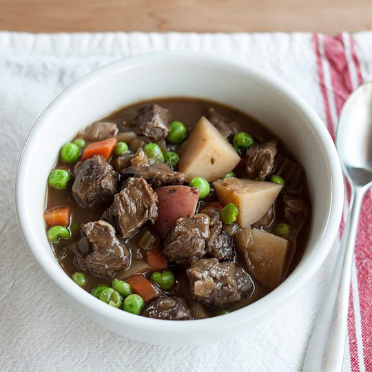
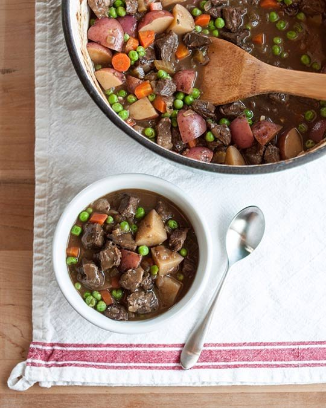

How To Make the Best Beef Stew from Scratch

Homemade beef stew is a dish that will serve you well through long winters and family visits and other small moments of need.
Like a good chili or chicken noodle soup, homemade beef stew is one of those dishes that is just good to have in your back pocket...
There are a few non-negotiable steps to making a beef stew. First, you must sear the meat. Truly sear. Getting the sides brown isn't the same...

A "fond," a.k.a. sticky dark glaze, will start to form on the bottom of the pan as you continue searing your meat in batches...
Ingredients
- 3-4 pounds beef chuck roast
- 1-3 tablespoons vegetable oil, divided
- 2 medium onions, diced
- 3 celery stalks, diced
- 2 cloves garlic, minced
- 2 tablespoons tomato paste
- 2 tablespoons Worcestershire, divided
- 1 teaspoon salt
- 3 tablespoons all-purpose flour
- 1 cup red wine or amber beer, plus extra to finish
- 3 sprigs fresh thyme or 2 teaspoons dried
- 1 bay leaf
- 4 cups chicken stock
- 3 carrots, diced
- 1 ½ pounds red bliss potatoes, cubed
- 1 cup frozen peas
- Salt and pepper
Equipment
- A large Dutch oven or soup pot
- Sturdy wooden spoon
Instructions
- Cube the beef. Trim off any large pieces of fat and cut into cubes.
- Warm the pot and begin searing the meat over medium-high heat.
- Continue searing all the meat until brown crust forms.
- Cook the vegetables: onions, celery, garlic, tomato paste, Worcestershire sauce, and salt.
- Add the flour and stir until veggies look mushy.
- Deglaze the pan with wine, scraping up fond.
- Return the meat to the pan, add thyme, bay leaf, and broth. Stir to combine.
- Cover and cook for 1½ hours at low simmer.
- Add potatoes and carrots, cook another 45-60 minutes.
- Stir in peas, add remaining Worcestershire and a splash of wine, season to taste, and serve!
Additional Notes
Cooking Beef Stew in the Oven: Preheat the oven to 300°F. Bring the stew to a simmer, cover, and cook in